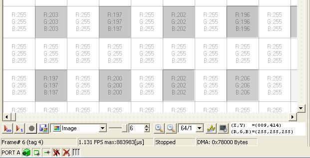

|
|
|
1 |
microDisplay Introduction |
1.1 |
Functionality |
1.2 |
Changes between microDisplay version 3.x and 4.x |
1.3 |
Start Dialogs |
1.3.1 |
Startup Selection |
1.3.2 |
Applet Selection |
1.4 |
The Windows in microDisplay |
1.4.1 |
Parameters Table |
1.4.2 |
Board and DMA channel Table |
1.5 |
How to Begin |
2 |
microDisplay Parameterizing |
2.1 |
Startup Selection |
2.2 |
Applet Selection |
2.3 |
The Windows in microDisplay |
2.3.1 |
Parameters Table |
2.3.2 |
Parameters Details |
2.3.3 |
Board and DMA Channel Table |
2.3.4 |
Window Control |
2.4 |
Camera Configuration Selection |
2.5 |
Global Settings / Options |
2.6 |
Local Settings |
2.7 |
Histogram |
2.8 |
The Magnifying Glass |
2.9 |
Exit |
2.10 |
Status Bar |
3 |
microDisplay Image Acquisition |
3.1 |
Continuous Image Acquisition |
3.2 |
Single Image Acquisition |
3.3 |
Sequence Grabbing |
3.4 |
AVI Grabbing |
3.5 |
Replay |
3.6 |
Software Trigger |
4 |
microDisplay Settings depending on Applets |
4.1 |
Look-Up Table Parameter |
4.2 |
White Balance Parameter |
4.3 |
Shading Parameter |
microDisplay 5
Documentation
1 microDisplay Introduction
This chapter shows the main functionality and gives a short overview about the first steps with microDisplay.
microDisplay is a software for viewing and monitoring of pictures grabbed with the microEnable frame grabber. It allows a fast intervention on the hardware applets selection and its features which are available for microEnable. Additionaly, grabbed pictures can be examined in detail. Contrary, it is not possible to edit or work on grabbed pictures within microDisplay.

1.3 Start Dialogs
On microDisplay start-up, some dialog window appear. These first selections are important for later parameter settings which depend on connected camera(s).
In this initially shown dialog at microDisplay startup it is possible to choose between loading an applet, restoring the previous state or loading a configuration file.
On the first start of microDisplay it is advisable to click on the Load Applet button. Because it doesn't exist a previous state and in most of the cases you won't have a configuration file you could open.
Either after choosing the Load Applet button or after clicking onto the Load Applet icon the following dialog is opened.
On the left hand side of this dialog the frame grabbers are listed, in the middle the applets are named. To set filters isn't possible yet. The camera type minimizes the selection of an applet.
In the list of available applets you will see the applets that are included into your "Hardware Applets" directory below the installation directory. You are able to copy standard microEnable applets to this folder or to create some new with VisualApplets Studio. If you choose the way of creating your own applets, please, make sure that you will choose an individual and short name which tells the whole story of this applet.
For activating a marked applet click on the button below in the middle. After this the dialog is still open. This lets you choose another applet for the some other board or it lets you unload a design for instance. If you don't choose a board out of the list on the left hand side the loaded applets automatically will be choosen for the first board (board 0), then for the second (board 1) and so on.
To start with entering parameters for the choosen applet(s) in the main window click Close.
In microDisplay a fast access to all of the functionality is given by some small windows beside the main window. In the following the most important windows will be described.
To enter the needed parameters you mustn't even search the menu or click onto an icon. Just enter your values to the parameters in the parameters table in the middle of the right hand side (or in the middle of the left hand side).
Sub entries get visible if you click on the plus in front of an entry.
Settings get possible when you right click onto the corresponding parameter. Some parameters accept integers, others show lists. The values of this lists can be choosen by right clicking on the parameter you want to modify, moving the hand to the value you want to choose and clicking onto the left button of your mouse when the blue bar is on the right value.
The below shown list contains the miscellaneous module which is standardized included and the modules you created with the names you gave them in VisualApplets Studio. This view only shows the writable parameters.
The following list also shows the read-only parameters. The setting for these views can be made within global settings.
As you can see in both screenshots above there are modules, called operators, that are named with DmaToPC and ImageBuffer. Both operators are as neccessary as the operator CameraGrayAreaBase i. e. for the usage of an applet.
Before you start to grab your first images, please check the entered values for Width and Height below DmaToPC and XLength and YLength below ImageBuffer to avoid possibly visible failure data on the right or bottom of the image window of microDisplay. Please also check the image size that has been set to your camera.

1.4.2 Board and DMA Channel Table
The board and DMA channel table shows as many DMA channels as grabbers are put to your PC. To take a look at the frames you will grab click on a DMA channel within the board and DMA channel selection table above the parameters table. The corresponding window on the left hand side becomes active and overlaps other windows if there are more than one.
A green light indicates that there is an active camera on this grabber. A red light means that there isn't a camera active on this DMA channel. Gray lights are shown if you haven't chosen an applet for this DMA channel. The small arrow remains on the active window and a special DMA channel.
Another information you can get is the serial number of your grabber. In some support cases you will need this number starting with 'a3'.

1.5 How to Begin
Before you are able to begin with the following next steps it is neccessary that you already have compiled an applet.
If you don't really know, if you already have an applet, please open the explorer and take a look at the installation path of microDisplay 4.0 (mostly "SiliconSoftware\runtime4.0") and in the subdirectory "Hardware Applets". There you will find two other dirctories: "2s300e" for usage with microEnable III and "2s600e" for usage with microEnable III-XXL. Please choose the right directory regarding your hardware and check whether there exist an applet (*.hap) in it. If you still don't have an applet, please take a look into the documentation of VisualApplets how to create an own applet.
In case that you already have an applet, please do following steps:
- At first start microDisplay and click on Load Applet.
- In case that you have more than one frame grabber installed please select a frame grabber.
- Choose an applet out of the listed applets which corresponds to the connected camera.
- Please control which DMA channel is active in the board and DMA channel selection window and click on it to let the corresponding window become active.
- If needed, modify the applet parameters in the parameter settings window.
- And simply start grabbing or taking a snapshot.
2.1 Startup Selection
On microDisplay startup this dialog window opens. In this dialog it is possible to choose between loading an applet, restoring the previous state or loading a configuration file.
An applet, also known as hardware applet, is the interface between camera and frame grabber. It defines the features your frame grabber has. But the camera type is the main criterion for this.
After first start of microDisplay it is possible to restore the previous state. This means to load the last loaded applet together with its configuration settings.
A configuration file contains an arrangement with all of the applet parameters.
If you don't want to see this dialog on microDisplay startup please click off Show this Window on Startup? Later it is possible to enable this dialog again. The decision can be made in the Global Settings dialog.
Applets can also be loaded by clicking on the icon Load Applet, by clicking on Settings > Load Applet or in the board and DMA channel selection window with a right click on a represented DMA channel.
After this the applet selection dialog appears.
Applets can be loaded on startup of microDisplay (if checked), by clicking on the icon Load Applet in the icon bar, by clicking on File > Load Applet in the menu or in the board and DMA channel selection window with a right click onto a represented DMA channel.
After clicking one of these options you will get to the Applet Selection.
On the left hand side of this dialog the frame grabbers are listed, in the middle the applets are named. To set filters isn't possible yet. The camera type minimizes the selection of an applet.
In the list of available applets you will see the applets that are included into your "Hardware Applets" directory below the installation directory. You are able to copy standard microEnable applets to this folder or to create some new with VisualApplets Studio. If you choose the way of creating your own applets, please, make sure that you will choose an individual and short name which tells the whole story of this applet.
For activating a marked applet click on the button below in the middle. After this the dialog is still open. This lets you choose another applet for the some other board or it lets you unload a design for instance. If you don't choose a board out of the list on the left hand side the loaded applets automatically will be choosen for the first board (board 0), then for the second (board 1) and so on.
To start with entering parameters for the choosen applet(s) in the main window click Close.
In microDisplay you are able to get a fast access to all of the functionality because of some small windows beside the main window. In the following these windows will be described.
Each hardware applet has a set of parameters which is a special characteristic of this particular applet. This can be very complex settings: writing of Look-Up Tables, the initialisation of a Bayer filter or the trigger modes of an line-scan camera applet.
All of this special applet characteristics are collected in one window. You can find it on the right side (or left side) of the microDisplay window.
In most of the cases you will enter some parameters. This will be needed if you don't get frames, if you get black frames or if you get only some outlines for instance. Just enter your values to the parameters in the parameters table in the middle of the right hand side (or left hand side).
Sub entries get visible if you click on the plus in front of an entry.
Settings get possible when you right click onto the corresponding parameter. Some parameters accept integers, others show lists. The values of this lists can be choosen by right clicking on the parameter you want to modify, moving the hand to the value you want to choose and clicking onto the left button of your mouse when the blue bar is on the right value.
The below shown list contains the miscellaneous module which is standardized included and the modules you created with the names you gave them in VisualApplets Studio. This view only shows the writable parameters.
The following list also shows the read-only parameters. The setting for these views can be made within global settings.
As you can see in both screenshots above there are modules, called operators, that are named with DmaToPC and ImageBuffer. Both operators are as neccessary as the operator CameraGrayAreaBase i. e. for the usage of an applet.
Before you start to grab your first images, please check the entered values for Width and Height below DmaToPC and XLength and YLength below ImageBuffer to avoid possibly visible failure data on the right or bottom of the image window of microDisplay. Please also check the image size that has been set to your camera.

2.3.2 Parameters Details
The details of some parameters are shown below the parameters details table. This values aren't writable. You are able to see some informative data which includes the parameter type (format), the SDK variable naming, the range of this parameter, the access that is possible (read and / or write) and a short description.

2.3.3 Board and DMA Channel Table
The board and DMA channel table shows as many DMA channels as grabbers are put to your PC. To take a look at the frames you will grab click on a DMA channel within the board and DMA channel selection table above the parameters table. The corresponding window on the left hand side becomes active and overlaps other windows if there are more than one.
A green light indicates that there is an active camera on this grabber. A red light means that there isn't a camera active on this DMA channel. Gray lights are shown if you haven't chosen an applet for this DMA channel. The small arrow remains on the active window and a special DMA channel.
Another information you can get is the serial number of your grabber. In some support cases you will need this number starting with 'a3'.
As already mentioned the board and DMA channel selection lets a special DMA channel window get active. Another way to arrange the DMA channel windows is the window control. The window control is available by choosing a list entry below the window menu.
You have some options to control your DMA channel windows:
- Cascade: The DMA channel windows will be arranged from the left edge on the top of microDisplay to the right edge on the bottom. In this order one DMA channel window after the other overlaps the other ones.
- Tile: The DMA channel windows will be arranged from the top of microDisplay to the bottom. The windows doesn't overlap each other. You're able to see a detail of each DMA channel window.
- Cockpit Right: The cockpit is the collection of the three windows board and DMA channel selection window, parameter settings window and parameter information window. This cockpit will be shown on the right side of microDisplay if you click once or hidden if you click twice on this option.
- Cockpit Left: The cockpit will be shown on the left side of microDisplay if you click once or hidden if you click twice on this option.
It is also available as some icons in the icon bar.
A camera configuration is a set of all of the applet parameters. A manual collection of complex grabbing settings can require a great deal of work. To avoid this microDisplay has the functionality to save a configuration in a file and to load a special configuration file. These configuration files are text files with the extension *.mcf.
You can find this functionality in the menu bar File > Open Configuration ... (Shortcut Ctrl + O) or File > Save this Configuration (Shortcut Ctrl + S).
Otherwise it is possible to get to this function by clicking onto the icons for loading and for saving a configuration.
If you have installed more than one frame grabber please choose a board you want to load an applet for in the next dialog Board Selector.
The global settings include all of the general microDisplay settings for all DMA channels. This function can be found either in the menu Tools > Options and on the icon bar directly below the menu bar.
The most important setting which you can enter is the selection of the number of frame buffers. microDisplay sets this value for frame grabbing as ring memory and writes the new frames in it. It is important for the representation that frame grabbing and representation doesn't take place in the same buffer. This can be made sure by two frame buffers. A bigger numer of frame buffers makes only sense with the usage of very fast cameras. Please consider that you use RAM in the size of the maximal camera frame for each frame buffer.
Otherwise this parameter limits the maximal number of frames at recording sequences which you can record in a sequence. Before recording a sequence you should set this parameter to a value which is big enogh for your sequence.
Timeout in seconds sets the time until break in the case that no frames can be got. Please note that the timeout parameter (FG_TIMEOUT) within parameters tab can also be set. The value which is the smallest one will be used.
The acquisition mode (that has been settable in some software version) is ACQ_Standard now.
The synchronize control lets your life get better, because within Dual* Applets you are able to click onto one DMA channel's grab or snapshot button to start the grabbing for both cameras automatically.
The option to show the RGB values in hexadecimal numbers shows no decimal RGB values anymore, but hexadecimal ones within DMA channel windows on the right bottom.
The decision on showing the welcome dialog on startup can be made in this dialog, the language can be set here and the location for temporary files can also be entered.
The parameters tree can be influenced by Hide read-only parameters and Hide empty categories. Additionally you are able to let the parameters be alphabetically sorted. Otherwise they will be sorted in a prescripted order (by an unvisible identical number).

The local settings include the settings for a special frame grabber DMA channel. This function can be found in each DMA channel window above the status bar.
The most important setting which you can enter is the selection of the Number of Framebuffers. microDisplay sets this value for frame grabbing as ring memory and writes the new frames in it. It is important for the representation that frame grabbing and representation doesn't take place in the same buffer. This can be made sure by two frame buffers. A bigger numer of frame buffers makes only sense with the usage of very fast cameras. Please consider that you use RAM in the size of the maximal camera frame for each frame buffer.
Otherwise this parameter limits the maximal number of frames at recording sequences which you can record in a sequence. Before recording a sequence you should set this parameter to a value which is big enogh for your sequence.
Timeout in seconds sets the time until break in the case that no frames can be got. Please note that the timeout parameter (FG_TIMEOUT) within parameters tab can also be set. The value which is the smallest one will be used.
The option to show the RGB Values in Hexadecimal numbers shows no decimal RGB values anymore, but hexadecimal ones within DMA channel windows on the right bottom.
Also there is the possibility to Display the Pixel Grid for zooming greater than 8 / 1.
Display the Pixel Value for zooming greater than 16 / 1 lets you see the values for each pixel. Please note that the values can only be seen during grabbing and after stopping the acquisition. It is not possible to see it in a saved image. The values that are shown are decimal values or hexadecimal values, depending on the setting you made in Local Settings.

The Synchronize Control lets your life get better, because within Dual* Applets you are able to click onto one DMA channel's grab or snapshot button to start the grabbing for both cameras automatically.
Besides the above mentioned functions you are also able to set the refresh rate of the grabbed images that will be shown.
microDisplay enables a frame judgement during grabbing with the help of a histogram. This histograms are calculated parallel to frame grabbing and don't cost computing time. Please consider that this can reduce the number of represented frames. A reduction of recorded frames doesn't take place.
The histogram function can be activated by clicking on the following icon .
You can also activate this function during running frame grabbing. A window pops up which describes a histogram of the actually active DMA channel window. The histogram is graphically and also textually represented just to let you understand the absolutely entry in each histogram channel.
For representation of this histogram you can choose between the surface or an envelope curve. If you work with color cameras you can activate or deactivate the color channels one by one
The slider on the right hand side allows to make this dialog getting transparent.
The three checkboxes lets you choose which color(s) you like to see within this histogram.
The magnifying glass is another instrument to judge your frames. It allows to zoom in or out of a frame. With this two icons you are able to see details or to zoom out.
You're also able to get the color information for an area of pixels you click on. To activate the magnifying glass please mark an Area-of-Interest with the mouse into one of the DMA channel windows. Additional to this you can find the absolute coordinates in the title bar of this window.
The magnifying glass can only be used while frame grabbing isn't activated.
Exit closes microDisplay if the grabbing is stopped. You can also use the cross in the right edge of the microDisplay title bar.
The status bar shows several information. A green symbol shows that there is a signal. If there is no signal you will see a red cross through this symbol.
The first symbol you see in the shown bar belongs signals which show that the camera is active or not.
The second symbol in the status bar shows whether your camera sends frames or not (FVAL). The third symbol means the sending of lines (LVAL). Please consider which camera type you have connected.
The fourth symbol shows whether microDisplay is set to a trigger mode. If this image is red microDisplay is set to Free Run Mode or you have either to control the settings in the corresponding camera tool or possibly the connection to the trigger board.
Move the cursor over the symbol and let it rest on it. You will get some tool tip information.
The represented text in the status bar describes the frame number which is grabbed at the moment, the number of frames you get per second, whether the grabbing has been started or stopped and the DMA data.
3.1 Continuous Image Acquisition
The acquisition of images and its display in one of the sub windows (DMA channel window) of microDisplay can be controlled by using the following button on the bottom of the DMA channel window or between the board and DMA channel selection window and the parameter settings window.
microDisplay starts the image acquisition of the current active DMA channel. If you like to change to another DMA channel, click on the preferred frame grabber in the board and DMA channel selection window.
Activate the Grab symbol again and this DMA channel starts with the image acquisition.
To stop the continuous image acquisition, activate the Stop icon right beside the acquisition button(s).
Please consider that you can't change some of the hardware applet settings during an active image acquisition.
When the image acquisition is stopped the currently displayed image of the active DMA channel can be saved in WindowsTM BMP, RAW or TIFF format. Therefore you have to click onto this icon:
A dialog will be displayed. Here you can specify the file name and the destination folder for the file which you want to save.
The icon right to the Grab icon allows the acquisition of single images. In this case only a single image will be acquired.
When the image acquisition will be stopped the currently displayed image of the active DMA channel can be saved in WindowsTM BMP, RAW or TIFF format. Therefore you have to click onto this icon:
A dialog will be displayed. Here you can specify the file name and the destination folder for the file which you want to save.
Besides the continuous acquisition you're able to work with image sequences. The sequences you will acquire in this chapter can be replayed which is described in one of the following chapters of this documentation.
The sequence grabbing is accessible by clicking the arrow besides the drop down list in the icon bar of the corresponding DMA channel window and choosing Sequence.
You will see that the Save icon changed its appearance. >
The images that will be saved are BMP, RAW, TIFF or AVI files. The file names contain leading zeros which sets the files in correct order in Explorer. After this it will be possible to create a sequence out of these arranged files.
Now you're able to enter a value in the text field between the time line and the Save icon. This value sets the number of frames you want to grab.
But please make sure that the number of frame buffers you entered in the DMA channel specific Local Settings is greater than the number of frames you want to grab for your sequence.
The next task is to start the sequence grabbing with a click on this icon:
The chart below lists all functions of the menu of sequence grabbing.
|
Symbol |
Function |
|
|
Playing an acquired sequence |
|
|
Stopping of playing an acquired sequence |
|
|
Selection of an image of an acquired sequence by slider |
|
|
Setting of the number of images of the sequence |
|
or |
Saving of an acquired image sequence |
Table 1: Sequence Functionality

3.4 AVI Grabbing
The AVI grabbing is a special form of the sequence grabbing.
The above mentioned sequence grabbing writes in a prepared image buffer of the PC memory. Therefore the function works very fast. But it is limited on the size of available memory in the PC.
For the grabbing of very long image sequences, you can write directly on hard disk. Therefore it is possible to save distinctly longer sequences. The ability of grabbing is strongly dependent on the performance of the PC hard disk system.
In practice the hard disk accesses differ in the access time by temporal variations. It is expedient to choose an image buffer as big as possible in microDisplay. A minimum of 16 image buffers are also expedient for relatively slow image acquisition.
The sequence AVI grabbing is accessible by clicking the arrow besides the drop down list in the icon bar of the corresponding DMA channel window and choosing Sequence AVI.
The AVI grabbing will be activated by the icon:
All acquired images will be directly written in an AVI file of the predefined name. To finish the grabbing use the button:
Each restart of the sequence grabbing overwrites the AVI file.
Now you're able to enter a value in the text field between the time line and the Save icon. This value sets the number of frames you want to grab.
But please make sure that the number of frame buffers you entered in the DMA channel specific Local Settings is greater than the numbers of frames you want to grab for your sequence.
The acquired images can be saved in a special AVI file format by clicking on the following icon.  Please consider that the AVI file format is limited to 2 GB.
Please consider that the AVI file format is limited to 2 GB.
After grabbing a sequence or after AVI grabbing you will probably want to replay it. To do this click on the arrow besides the drop down list in the icon bar of the corresponding DMA channel window and choose Replay.
By clicking on the Grab icon the sequence you grabbed before will be shown with the number of frames you have chosen.
You're also able to save this sequence in this functionality. Click on the Save icon to choose a file name and folder.

3.6 Softwaretrigger in Module TrgPortArea or TrgPortLinediv>
- Set the "TriggerMode" to "ExternSw_Trigger" in group "TrgPortArea".
- Set the "ExsyncEnable" to "On".
- Set the "ImgTrgInSource" to "SoftwareTrigger".
- Check the setting for "ImgTrgInPolarity" concerning your camera.
- Check the time value of "Timeout" in group "DmaToPc" and within menu (the lowest value will been taken for reference).
- Start the acquisition.
- Confirm the "SoftwareTrgPulse" with "1" within the timeout that has been set.
- Redo action 7. as often as you like.
The SDK accepts the same order of function calls. But, for more information have a look at the softwaretrigger chapter within SDK documentation.

4 microDisplay Settings depending on Applets
The following three dialogs (Look-Up Tables, white balance and shading parameters) are available by using the menu port.
You are also able to enter the parameters by clicking onto following buttons below the menu bar:
Look-Up Table parameters: 
white balance parameters:
shading parameters:
Look-Up Table Parameter are only available in some of the applets. Please take a look at the applet documentation.
It lets you carry out a correction which will let your grabbed frames get more linear. The Look-Up Table dialog is available by clicking onto the shown button below the menu bar. 
There are different Look-Up Table dialogs existing.
- One standard Look-Up Table dialog for gray applets.
- One Knee Look-Up Table dialog for gray or Bayer applets.
(Dialog is the same as standard Look-Up Table dialog.)
- Three Knee Look-Up Table dialogs for RGB applets.
(Dialogs are the same as standard Look-Up Table dialog, but for each color channel.)
Two curves are available which you can choose out of the list box. The first and default curve Linear displays the graph in lines from point to point. The second curve Spline displays the graph in a wellrounded line.
Display Interpolation lets you enable or disable the red interpolation line between the points.
The number of interpolated points can be entered. The NbPoints button lets you create a very exact graph the higher this entered value is.
Reset sets the graph back to the standard graph from the left on the bottom to the right on the top. Invert sets the graph from the right on the bottom to the left on the top.
A click onto Display Actual Loaded LUT shows the actual Look-Up Tables.
If you want to load the LUT you created to a corresponding DMA channel click onto the Load LUT button.
The white balance parameters are accessable by clicking onto the corresponding button:
It is possible to set the white balance automatically. But it is also possible to set the values (as red scaling factor, blue scaling factor and initial bayer mask) manually in the white balance dialog. The shown values are standard values.
The shading functionality is not available in all of the applets. Please take a look at the applet documentation.
The parameters are accessable by clicking onto the corresponding button:
It is used to configure and to enable or disable the shading correction. The shading correction allows rectifying inhomogeneous luminosity and inadequacies of the sensor. Therefore a black and a white reference image is required.
The white reference image rescales the value of each pixel to be white (255) for the luminosity in the given environment. It is best to record a white reference image by acquiring and saving a single image of the scene which was e. g. covered by a white sheet.
Even a completely dark sensor is not returning pixel values that are constantly zero. However this can be corrected by subtracting this offset from each pixel. This can be done if a black reference image for the used sensor is available. To record a black reference image cover the camera lens tightly and acquire and save a single image.
Additionally to the shading correction it is possible to suppress pixel defects by interpolating white noise pixels through its neighbours. The black reference image of the shading correction can be used to identify white noise pixels easily since these have exceptionally high values within such an image.
Please note that the shading correction is limited to 8 bit images and that reference images require at least the width and height of the images to be acquired later.
This dialog allows you to select one out of four previously configured parameter sets and to enable or disable the shading correction while grabbing.

It is necessary to download the coefficients of at least one parameter set to the microEnable III frame grabber to be able to use the shading correction feature of this applet. This is done as follows:
First select the parameter set you wish to configure. In particular four parameter sets are provided by this applet.
As mentioned above, a white and a black reference image is required to configure the shading correction for the chosen parameter set. The white reference image improves inhomogeneous lightening conditions, while the black reference image rectifies the offset of dark pixels. By pressing the ... buttons you can choose the previously recorded reference files. Please note selecting the reference files only does not configure the frame grabber. You still have to download the set into the frame grabber.
If you want to enable the Fixed Pattern Noise Correction of this applet please mark the related checkbox Enable. Now, it is possible to select the Ref. Noise Image file (e. g. the black reference image) and key in a value for the Threshold. All pixels exceeding this threshold in the reference image are marked as error pixels and will be interpolated by its neighbours. Please note selecting a reference image file and a threshold does not configure the frame grabber.
By clicking on the Download button the current parameter set is downloaded to the microEnable III frame grabber. After downloading the coefficients the current parameter set becomes available.
The multiplicative correction and subtractive correction can be turned on or off independently if the fixed pattern noise correction isn't used.
If you enabled the fixed pattern noise correction it is impossible to switch off the subtractive correction since noise pixels are identified by a subtractive offset of 255 which requires the offset to be available to the applet. However a plain fixed pattern noise correction without offset correction can be achieved by not providing a black reference image for the shading correction. This will provide an offset of zero for each pixel and leaves intact pixels unchanged.
The button Clear deletes all settings for the current parameter set.
In the case that more than one parameter sets has been entered you have to activate one parameter set to use it for shading.
During the actual configuration of the microEnable III frame grabber the grabbing has to be stopped.

| Forward |